Foundations
What if the layer under everything were different?
5-
regel
code as governed Postgres rows
Shipped
0
0
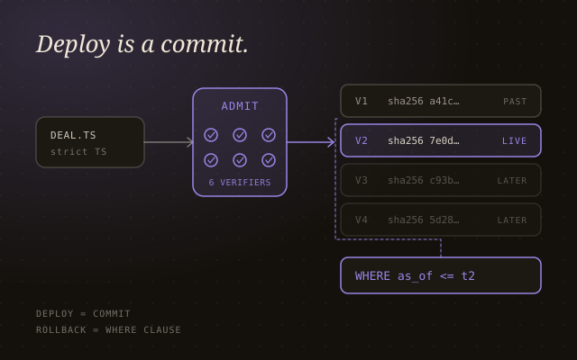
regelShippedWhat if deploying were a commit, and rolling back were a WHERE clause?
A Go kernel runs strict-TypeScript apps admitted as content-addressed Postgres rows. Deploy is a commit; rollback is an as-of WHERE clause — and nothing lands unverified.
GoTypeScriptPostgresupdated Jul 20, 2026 -
kern
a homoiconic SaaS substrate
Spec
—
—
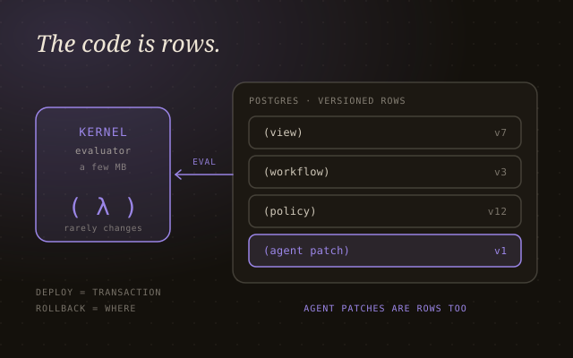
kernSpecWhat if every view, workflow and policy — even an agent's patch — were a versioned row?
A homoiconic SaaS substrate in Lisp — every view, workflow, policy, and even agent-written patch is a versioned row, evaluated by a tiny kernel.
LispPostgres -
eigen
local-first hypermedia in one Rust binary
Spec
—
—
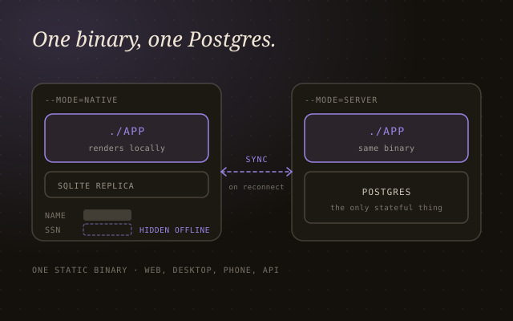
eigenSpecWhat if one static binary were the app, the desktop and the API — and PII stayed hidden offline?
A local-first hypermedia framework for Rust — one static binary is the app, desktop, and API; Postgres holds everything; PII stays hidden offline.
RustPostgres -
taal
the BEAM, built on Go
Spec
—
—
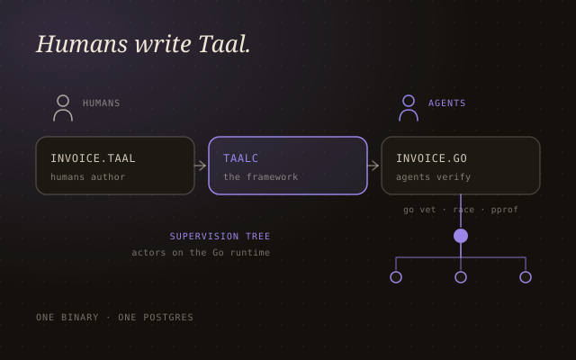
taalSpecWhat if you could have Erlang's actors and supervision trees without the Erlang VM?
A small language for building the BEAM on Go — Erlang-style actors and supervision trees, without the VM.
GoActor model -
streng
a closed-world TypeScript
Spec
—
—
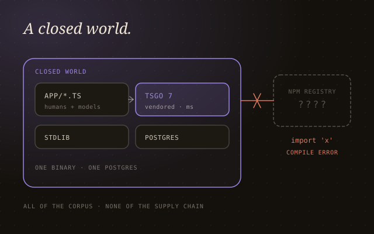
strengSpecWhat if TypeScript came with no supply chain at all — the whole corpus vendored and checked in milliseconds?
A closed-world TypeScript — all of the corpus, none of the supply chain, checked by a vendored native compiler in milliseconds.
TypeScriptNative compiler
Platforms & frameworks
Opinionated ways to build a whole product.
8-
samen
a governed B2B-SaaS foundry
Shipped
0
0
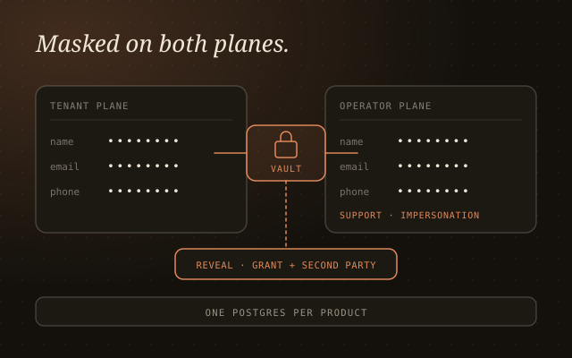
samenShippedWhat if the boring 80% of a SaaS product came preset — and you could support tenants without ever seeing their customers?
A governed B2B-SaaS foundry that presets the boring 80% — identity, CRM, billing, support, and the product UI — as six governed idioms on one Postgres per product. Support your tenants without ever seeing their customers.
ElixirAshObanPostgresupdated Oct 5, 2026 -
tinker
internal tools on data you can't see
Shipped
0
0
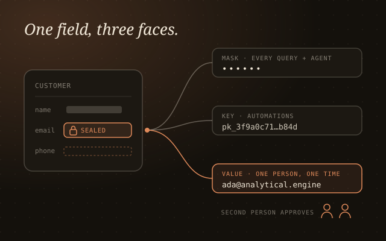
tinkerShippedWhat if you could build internal tools on personal data nobody can read without a second person's approval?
An ontology-driven builder in Rust on PostgreSQL 18. Define an object once and get a row-level-secured table, a governed API and an MCP front door for agents. Email and phone are sealed by type in a separate vault: queries see a mask, automations get a key, and a person sees the value only after a second person approves. Erasure is a crypto-shred.
662 tests passingM0–M8 gated milestonesRustPostgreSQL 18MCPupdated Oct 5, 2026 -
chord
the omakase full-stack for G#
Spec
—
—
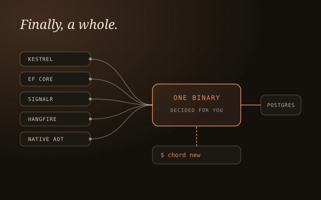
chordSpecWhat would a G# stack look like if every decision were already made for you?
The omakase full-stack for G# — every decision made for you, batteries included, one blessed way to do each thing.
G#Full-stack -
fugue
the Phoenix of G#, on Orleans
Spec
—
—
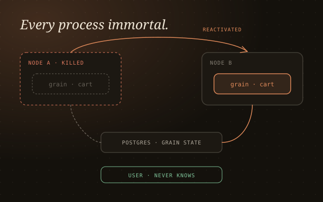
fugueSpecWhat if an app framework were distributed by default, built on virtual actors?
The Phoenix of G#, on Orleans — a distributed-by-default app framework built on virtual actors.
G#Orleans -
realbook
the WordPress of G#, with a gate
Spec
—
—
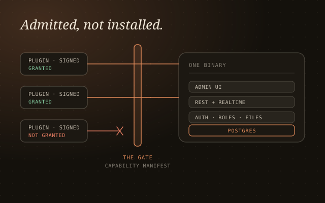
realbookSpecWhat if content and commerce were governed by admission instead of a plugin free-for-all?
The WordPress of G#, with a gate — content and commerce, governed by admission instead of a plugin free-for-all.
G#CMS -
lui
layout-first UI with an AI sidecar
Spec
—
—
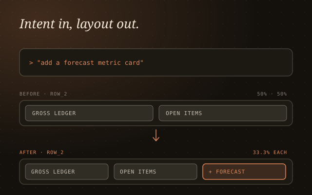
luiSpecWhat if you described a screen's intent and the framework composed the layout?
Layout User Interface — a layout-first UI framework with an AI sidecar that composes screens from intent.
UI frameworkAI sidecar -
cauldron
a web framework from zero dependencies
Archived
0
0
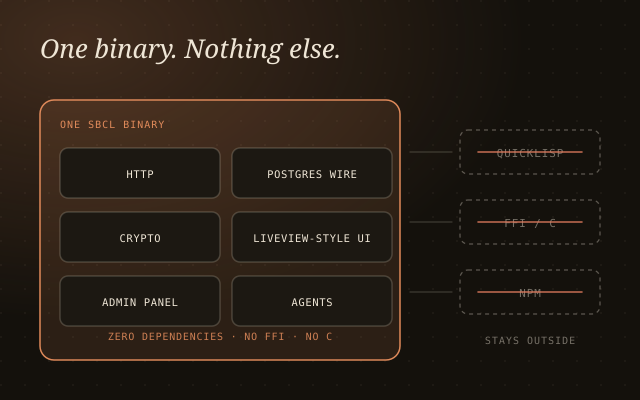
cauldronArchivedHow much of a modern web stack can one Lisp binary carry with no dependencies at all?
A whole web framework from zero dependencies in Common Lisp — HTTP server, Postgres wire protocol, crypto, a LiveView-style UI engine, an admin panel, and an agent system — shipped as one SBCL binary. No Quicklisp, no FFI, no C.
1,554 tests green17–21 Mar built → archivedCommon LispSBCLZero depsOne binaryupdated Mar 17, 2026 -
crucible-works
a business platform built to prove cauldron
Archived
0
0
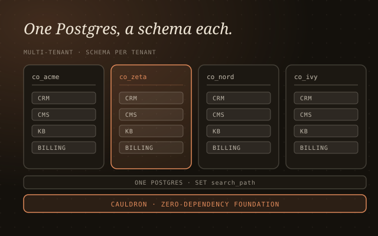
crucible-worksArchivedCould a zero-dependency framework carry a real multi-tenant product?
A multi-tenant business platform built on cauldron to prove it could carry a real product — CRM, CMS, knowledge base, billing, and two agent runtimes on schema-per-tenant Postgres — archived with it once the point was made.
540 tests green17–21 Mar built → archivedCommon LispOn cauldronMulti-tenant Postgresupdated Mar 17, 2026
Agent tools
Making agents cheaper, better reviewed, and easier to steer.
4-
batonv7.5
one thread that never fills up
Shipped
0
0
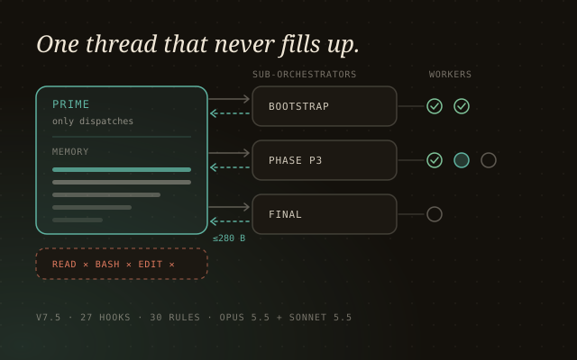
baton v7.5ShippedWhat if the orchestrator never read a file, and its thread lasted as long as the work did?
A Claude Code mod. During a run the prime may only dispatch, ask and use its memory; a guard refuses everything else. Sub-orchestrators run each phase and hand back one line of at most 280 bytes, noted into a memory the prime can zoom into. Rulings you give stick across runs, irreversible commands from any agent wait for you, and every behavior change lands red, green, blue. Underneath is still the router prompt and its record: evidence that cites, verdicts per criterion, gates a person holds, and TEAM: github for a team.
0 files the prime reads≤280 B back from a phase27 hooksClaude Code modJavaScriptMulti-agentupdated Oct 5, 2026 -
luminaryTeam
a 40-expert adversarial review
Archived
0
1
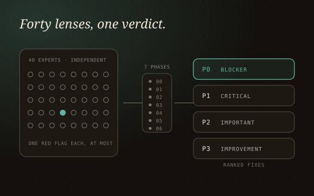
luminaryTeamArchivedWhat would 40 domain experts find if they reviewed your plan before launch?
A multi-agent technical review framework — drop in a codebase, spec, or launch plan and get an adversarial audit from 40 domain experts across 7 phases, synthesized into ranked fixes.
PromptsMulti-agentClaudeupdated Oct 5, 2026 -
senkani
token compression for coding agents
Archived
0
0
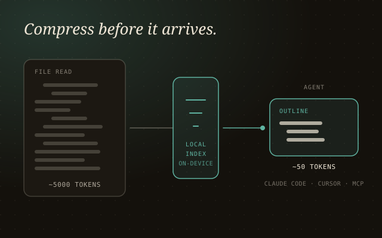
senkaniArchivedHow many tokens could a coding agent skip if every read were compressed before it arrived?
Token compression for AI coding agents — a native macOS binary that compresses every file read and filters shell output from a local index before a token reaches Claude Code, Cursor, or any MCP agent.
SwiftmacOSMCPupdated Oct 5, 2026 -
workflowForge
paste a workflow, get a page you can send
Shipped
0
0
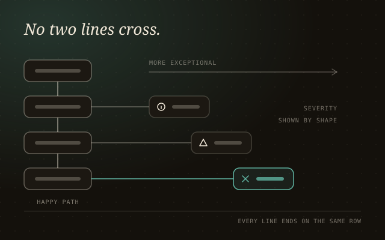
workflowForgeShippedWhat if any workflow could become a diagram you can send — one where no two lines ever cross?
Paste a workflow, get a page you can send. Whatever model you already use writes the JSON; one self-contained HTML file draws it as a DRAKON-style diagram — happy path down the left, exceptions fanning right, severity by shape, and no two lines ever cross. Every step carries a verified, disputed, or unverified state only a human can advance, and the page never reads your process.
Single-file HTMLSVG rendererBring your own modelNo serverupdated Sep 5, 2026
Products
Built to be used — by someone, this week.
4-
aiCRO
a full growth engagement from one URL
Shipped
1
1
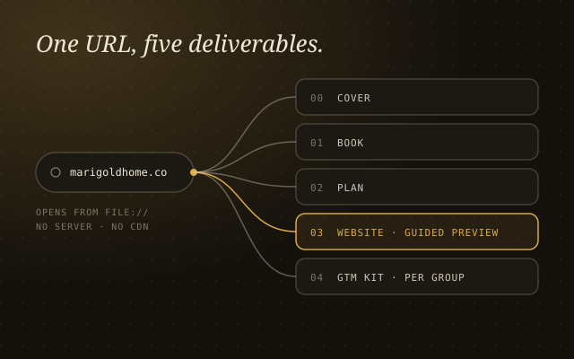
aiCROShippedWhat if one URL were enough for a whole growth engagement — analysis, positioning, a rebuilt site and a GTM kit?
A full growth engagement from one URL — analysis, positioning, a rebuilt site inside a guided preview, and a GTM kit per customer group. Evidence-graded and self-contained: it opens from a file, no server, no AI slop.
Node.jsClaudeSelf-contained HTMLupdated Jul 20, 2026 -
terminalHelper
a searchable terminal command reference
Shipped
0
0
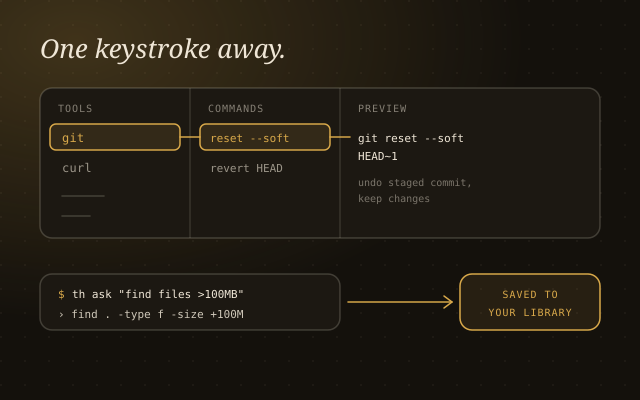
terminalHelperShippedWhat if your terminal had a browsable library of every command you've ever needed?
A searchable, browsable command reference for your terminal — a Miller-column TUI, full-text search, and an ask-Claude escape hatch that saves answers to your library.
GoBubble TeaSQLiteupdated Apr 3, 2026 -
nonprofitEventPlanner
run a whole youth trip from your phone
Local
—
—
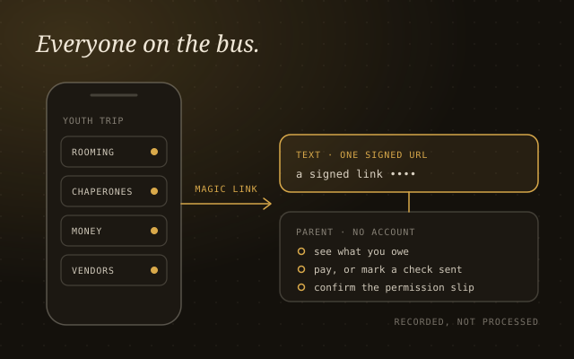
nonprofitEventPlannerLocalWhat if one volunteer could run an entire youth trip from their phone?
One place for a volunteer to run a whole youth trip — rooming, chaperones, money tracked (not chased), and parents onboarded by magic link.
Rails 8HotwirePostgres -
customCMS
one brain, many book storefronts
Local
—
—
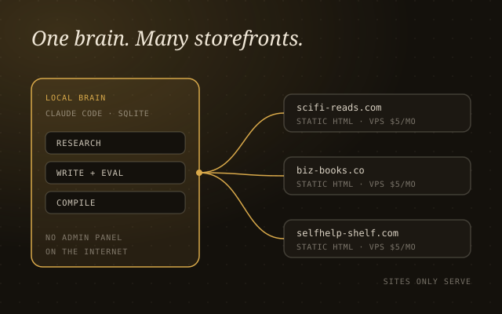
customCMSLocalWhat if one local brain could research, write and run a dozen niche book sites at zero marginal cost?
BookEngine — one local brain that researches, writes, compiles, and runs many niche book-review sites on cheap VPSes, driven by Claude at zero marginal cost.
GoSQLiteClaude Code
Experiments in an experimental language
An AI writing a whole stack in Bend? Yes, please.
3-
bocht
a whole backend in one Bend binary
Case study
0
0
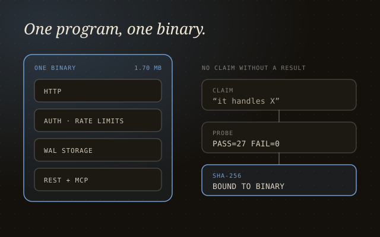
bochtCase studyCan an AI build a whole backend in Bend — and prove every claim it makes?
Bend series, part 1. A whole backend (HTTP, auth, rate limits, WAL storage, REST and MCP) written as one Bend program by an AI app builder, shipped with an evidence discipline worth stealing: no claim without a re-derivable result.
r61 pinned8,793 lines of Bend1 binaryBendCWALMCPupdated Oct 5, 2026 -
bochtCMS
an MCP-only CMS, and the curve its tests missed
Case study
0
0
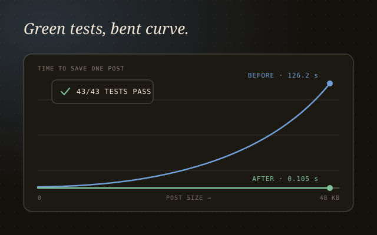
bochtCMSCase studyWhat does a passing test suite miss when a CMS freezes on a long post?
Bend series, part 2. A blog CMS on bocht whose only interface is seven MCP tools. Its 43 tests passed on every version, including the one that froze for two minutes on a long post. One function fixed: 1,200× faster, same bytes out.
43/43 tests passed2 min freeze on a long post1,200× faster after one fixBendMCPJSON-RPCClaude Codeupdated Oct 5, 2026 -
shellOS
a desktop shell drawn in pure Bend
Case study
0
0
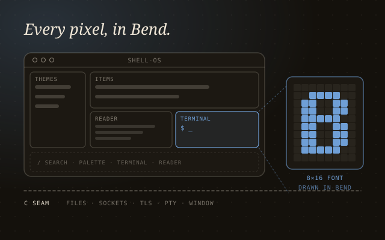
shellOSCase studyCan a desktop shell drawn pixel by pixel in Bend move from Linux to macOS without changing the app?
Bend series, part 3. A single-window desktop shell drawn pixel by pixel in pure Bend (terminal over a real PTY, reader, palette), ported from a Linux VM to macOS with no app changes, three screen-only bugs fixed, then redesigned.
VM → Mac ported3 bugs fixed2× framesBendPTYVT100Claude Codeupdated Oct 5, 2026
Design studies
Designs taken far enough to argue with.
5-
Overlook
an open letter to Slack
Concept
—
—
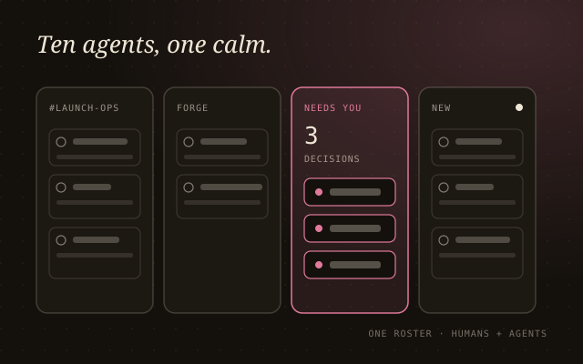
OverlookConceptWhat if supervising ten agents felt as calm as reading one channel?
An open letter to Slack, with the product built first. Columns instead of tabs, a room per project, humans and agents on one roster, and two signals — new, and needs you. Underneath, a graph that can recall what a wrong fact touched, fork a decision into its futures, and blame any line.
Vanilla JS12 live demosAgent simNo-build -
wijzer
an open letter to Apple
Concept
—
—
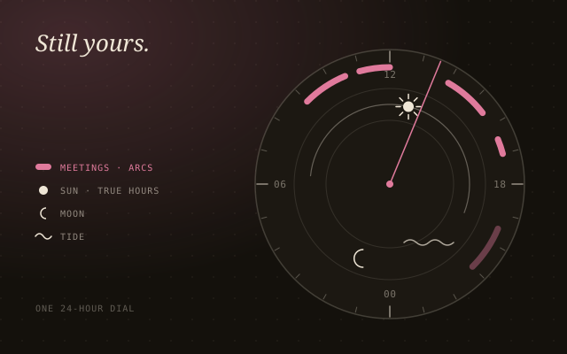
wijzerConceptWhat if your watch showed how much of the day is still yours?
A watch face that draws your calendar and your sky on one 24-hour dial — meetings as arcs, the sun, moon and tide resting at their true hours. Three faces, prototyped in HTML at true widget scale, with the ephemeris computed rather than invented. Written up as an open letter to Apple, because watchOS does not open the face.
SVGComputed ephemerisTrue scaleNo-build -
uiExplorer
the UI Lab
Shipped
0
0
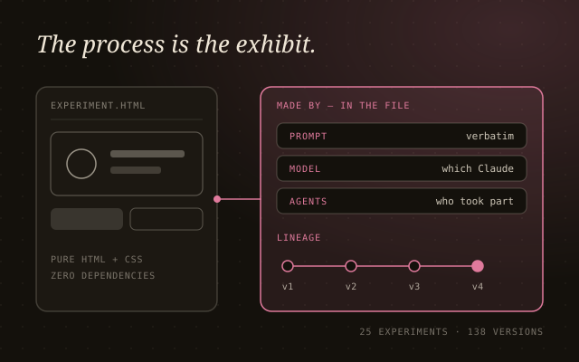
uiExplorerShippedWhat if every interface experiment documented its own making — prompt, model, agents and lineage?
The UI Lab — a forkable, zero-dependency framework where every interface experiment is pure HTML/CSS and documents its own making: prompt, model, agents, version lineage.
25 experiments138 versionsHTML/CSSZero-depAI-nativeupdated Jul 20, 2026 -
omegaClass
an outdoor fire station in one cabinet
Concept
—
—
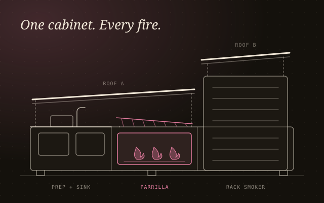
omegaClassConceptCan one stainless cabinet hold a parrilla, a smoker and a prep station — and let two pitmasters work at once?
One wide sealed stainless cabinet that opens into a full outdoor fire station in three zones: a prep + sink counter, a brasero-fed Argentine parrilla, and a vertical rack smoker — sheltered by two lift-up roofs. Designed so a master asador and a master pitmaster can both work it at once. Configure it live, then read the full plan.
Three.jsTwo-axis rigPBR + reflectionsNo-build -
STOWORK
a carry-on that becomes a workstation
Concept
—
—
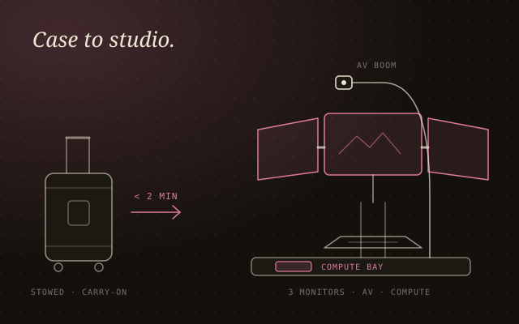
STOWORKConceptCan a carry-on unfold into a three-monitor studio in under two minutes?
A carry-on that unfolds into a full three-monitor workstation — broadcast-grade AV and a swappable compute bay for your own Mac mini or Studio — in under two minutes.
Three.jsParametric rigNo-build